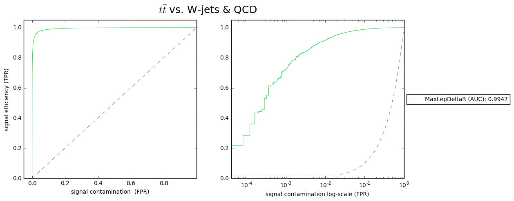
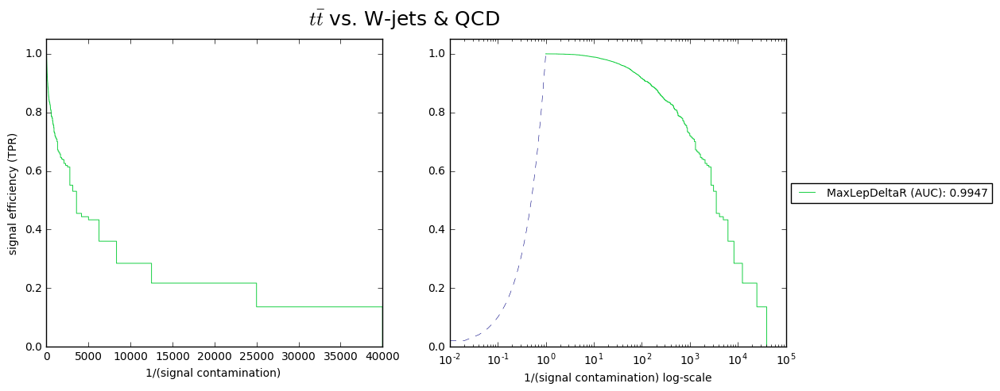
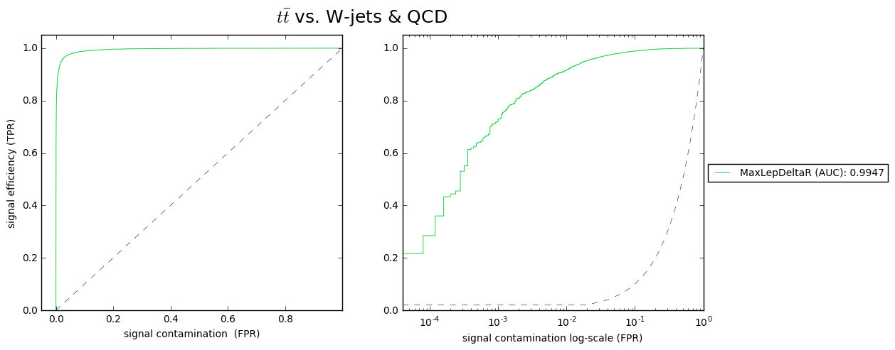
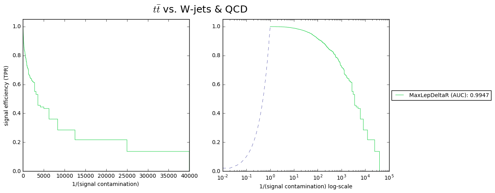

Postprocessing Example¶
Add directory containing CMS_Deep_Learning repo to the sys path. repo docs¶
%matplotlib inline
if __package__ is None:
import sys, os
sys.path.append(os.path.realpath("/data/shared/Software/CMS_Deep_Learning"))
Import stuff¶
from CMS_Deep_Learning.postprocessing.plot import \
plot_roc_curve,plot_dual_roc,plot_bins
from CMS_Deep_Learning.postprocessing.metrics import \
build_accumilator,bin_metric_vs_char,get_roc_data,get_roc_points
import numpy as np
import pandas as pd
import glob
os.environ["DELPHES_DIR"] = "/bigdata/shared/Delphes"
We will make plots from a subset of the data data here on the culture-plate machine¶
dirr = '/bigdata/shared/Delphes/postproc_ex'
data_subset = glob.glob(dirr+"/val/*.h5")[:5]
Plot a ROC Curve with plot_roc_curve (be patient, it takes a long time to grab the data)¶
_,roc_dicts = plot_roc_curve(name="MaxLepDeltaR",
model=dirr +"/model.json",
weights=dirr +"/weights.h5",
data= data_subset,
true_class_index=1)
Using Theano backend.
Using cuDNN version 5105 on context None
Mapped name None to device cuda: GeForce GTX 1080 (0000:04:00.0)
Plot The same ROC curve quickly by using the precomputed data outputed in the previous cell. These ploting functions are very dynamic. You can input file paths, data, precomputed values and more.¶
plot_roc_curve(roc_dicts)

(<module 'matplotlib.pyplot' from '/usr/local/lib/python2.7/dist-packages/matplotlib/pyplot.pyc'>,
[{'ROC_data': (array([ 0. , 0. , 0. , ..., 0.9920078, 0.9920078, 1. ]),
array([ 1.94931774e-04, 8.18713450e-03, 8.57699805e-03, ...,
9.99805068e-01, 1.00000000e+00, 1.00000000e+00]),
array([ 0.99317235, 0.98881078, 0.98872644, ..., 0.00269945,
0.00269297, 0.00120263], dtype=float32),
0.94275604269499824),
'name': 'MaxLepDeltaR'}])
Use plot_dual_roc to also plot logscale¶
plt, roc_dicts = plot_dual_roc(name="MaxLepDeltaR",
model=dirr +"/model.json",
weights=dirr +"/weights.h5",
data= data_subset,#dirr +"/val",
true_class_index=1,flipped=False, invertCont=False, title=r'$t\bar{t}$ vs. W-jets & QCD')
/usr/local/lib/python2.7/dist-packages/matplotlib/font_manager.py:1288: UserWarning: findfont: Font family [u'sans-serif'] not found. Falling back to Bitstream Vera Sans
(prop.get_family(), self.defaultFamily[fontext]))

Different formatting options availiable…¶
plot_dual_roc(roc_dicts,flipped=True, invertCont=False, title=r'$t\bar{t}$ vs. W-jets & QCD')
plot_dual_roc(roc_dicts,flipped=True, invertCont=True, title=r'$t\bar{t}$ vs. W-jets & QCD')
plot_dual_roc(roc_dicts,flipped=False, invertCont=False, title=r'$t\bar{t}$ vs. W-jets & QCD')
plot_dual_roc(roc_dicts,flipped=False, invertCont=True, title=r'$t\bar{t}$ vs. W-jets & QCD')
(<module 'matplotlib.pyplot' from '/usr/local/lib/python2.7/dist-packages/matplotlib/pyplot.pyc'>,
[{'ROC_data': (array([ 0. , 0. , 0. , ..., 0.9920078, 0.9920078, 1. ]),
array([ 1.94931774e-04, 8.18713450e-03, 8.57699805e-03, ...,
9.99805068e-01, 1.00000000e+00, 1.00000000e+00]),
array([ 0.99317235, 0.98881078, 0.98872644, ..., 0.00269945,
0.00269297, 0.00120263], dtype=float32),
0.94275604269499824),
'name': 'MaxLepDeltaR'}])

 



## Use get_roc_points to determine the efficiency (tpr) and contamination (fpr) for various thresholds
d = get_roc_points(roc_dicts, tpr=[.9,.95,.8], fpr=[.1], thresh=[.33])[0]
print(pd.DataFrame(d,columns=["tpr","fpr", "thresh"]))
tpr fpr thresh
0 0.849708 0.100097 0.437413
1 0.900000 0.158772 0.282033
2 0.949903 0.304581 0.117821
3 0.800000 0.067154 0.565565
4 0.887524 0.137817 0.329983
Use build_accumilator to define some characteristic to use for binning. The accumilator is a functional that maps the data to a characteristic. Then use bin_metric_vs_char to make the bins. Although certain features can be grabbed without an accumilator from the HLF collection.¶
accum = build_accumilator(np.max, "PT_ET",[{"ObjFt1": -1, "ObjFt2": 1,"ObjFt3": 1}, {"ObjFt1": 1, "ObjFt2": -1,"ObjFt3": -1}])
my_bins = bin_metric_vs_char(model=dirr +"/model.json",
weights=dirr +"/weights.h5",
data=data_subset,#dirr +"/val",
accumilate=accum,true_class_index=1)
/usr/lib/python2.7/dist-packages/numpy/core/_methods.py:82: RuntimeWarning: Degrees of freedom <= 0 for slice
warnings.warn("Degrees of freedom <= 0 for slice", RuntimeWarning)
/usr/lib/python2.7/dist-packages/numpy/core/_methods.py:59: RuntimeWarning: Mean of empty slice.
warnings.warn("Mean of empty slice.", RuntimeWarning)
Use plot_bins and choose a y_value for the plot.¶
plot_bins(my_bins,y_val='tpr',mode='bar')
plot_bins(my_bins,y_val='acc',mode='scatter')
/usr/local/lib/python2.7/dist-packages/matplotlib/axes/_axes.py:531: UserWarning: No labelled objects found. Use label='...' kwarg on individual plots.
warnings.warn("No labelled objects found. "


<module 'matplotlib.pyplot' from '/usr/local/lib/python2.7/dist-packages/matplotlib/pyplot.pyc'>
Make histograms¶
class_labels = {0:'QCD',1:r'$t\bar{t}$', 2:"W+jets"}
my_bins2 = bin_metric_vs_char(model=dirr +"/model.json",
weights=dirr +"/weights.h5",
data=data_subset,
accumilate=accum,true_class_index=1,
nb_bins=200)
plot_bins(my_bins2,
y_val="freq",
mode='histo',
ylim=None,
class_labels = class_labels,
xlabel="PT of Highest PT Letpon (GeV)",
title="Event Counts",
min_samples=20,
xlim=(0,250)
)
plot_bins(my_bins2,
y_val="freq",
mode='bar',
ylim=None,
class_labels = class_labels,
xlabel="PT of Highest PT Letpon (GeV)",
title="Event Counts",
min_samples=20,
xlim=(0,250)
)

<module 'matplotlib.pyplot' from '/usr/local/lib/python2.7/dist-packages/matplotlib/pyplot.pyc'>
Stacked¶
plot_bins(my_bins2, y_val="freq",
mode='histo',
ylim=None,
class_labels = class_labels,
xlabel="PT of Highest PT Letpon (GeV)",
title="Event Counts",
stack=True,
min_samples=20,
alpha=.75)
plot_bins(my_bins2, y_val="freq",
mode='histo',
ylim=None,
class_labels = class_labels,
xlabel="PT of Highest PT Letpon (GeV)",
title="Event Counts",
stack=True,
normalize=True,
min_samples=20,
alpha=.75)

<module 'matplotlib.pyplot' from '/usr/local/lib/python2.7/dist-packages/matplotlib/pyplot.pyc'>
plot the total contamination (‘fpr’: False-Positive Rate)¶
plot_bins(my_bins2, y_val="fpr",
mode='scatter',
ylim=None,
class_labels = class_labels,
xlabel="PT of Highest PT Letpon (GeV)",
title="ttbar Contamination",
stack=True,
min_samples=20,
alpha=.75)

<module 'matplotlib.pyplot' from '/usr/local/lib/python2.7/dist-packages/matplotlib/pyplot.pyc'>
And the class contaminations for the ‘false’ classes individually¶
plot_bins(my_bins2, y_val="norm_cont_split",
mode='scatter',
ylim=(-.1,1.1),
class_labels = class_labels,
xlabel="PT of Highest PT Letpon (GeV)",
title="Contamination Rates for W+Jets and QCD",
min_samples=20,
alpha=.75)
plot_bins(my_bins2, y_val="norm_cont_split",
mode='histo',
ylim=(-.1,1.1),
class_labels = class_labels,
xlabel="PT of Highest PT Letpon (GeV)",
title="Contamination Rates for W+Jets and QCD",
min_samples=20,
alpha=.75)

<module 'matplotlib.pyplot' from '/usr/local/lib/python2.7/dist-packages/matplotlib/pyplot.pyc'>
Using the inputHandler class to simplify grabbing data¶
from CMS_Deep_Learning.storage.input_handler import inputHandler
h = inputHandler(["Y",'predictions'])
y,pred = h(model=dirr +"/model.json",
weights=dirr +"/weights.h5",
data=data_subset)
y = y[0]
Using this to find the confusion matrix for the classifier¶
_y = np.argmax(y,axis=-1)
_pred = np.argmax(pred,axis=-1)
from sklearn.metrics import confusion_matrix
print(confusion_matrix(_y, _pred, labels=None, sample_weight=None))
[[4771 337 22]
[ 357 4261 512]
[ 82 533 4515]]